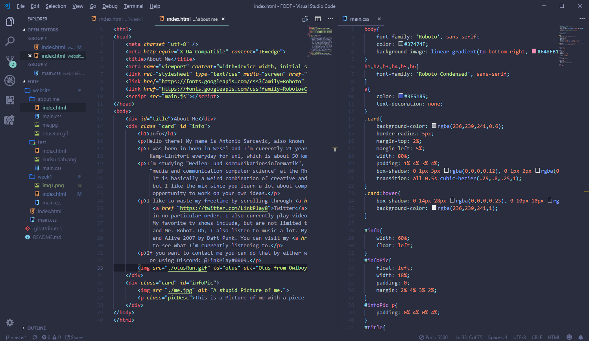
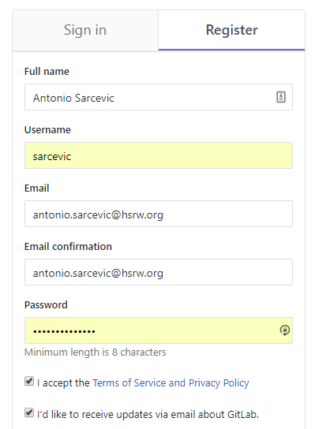
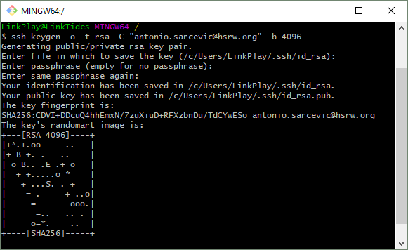
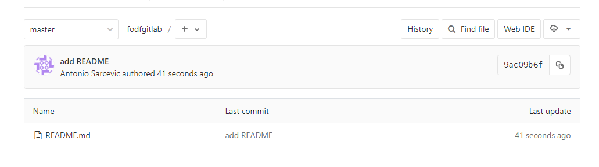
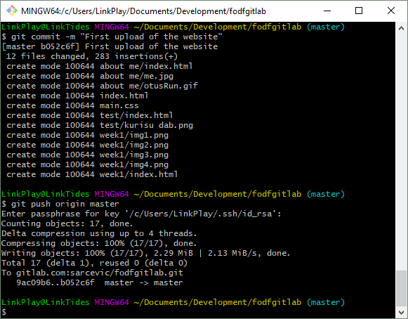

The week started with an introduction into the Fablab. We got a walkthrough and Mr. Ingrassia explained all the different tools we can use to create cool projects in this course. The assignment for the first week was to create a website using HTML and CSS. We are supposed to create a page to present ourselves and also create this document of our progress.
At first, I started with some dummy text to create a stylesheet for my website. I gave the website a title using the title meta-tag and added a header and a paragraph. After loading up the website using the Live Server plugin for Visual Studio Code, I decided to create a .css file to give the website some style. The first thing I changed was the font and since Roboto is my go-to font I picked that one. Google Fonts gave me a link tag I can add to my HTML-file to embed the font into my website. Inside the CSS file I specified the font-family to be Roboto for everything using the body selector and I also changed the color property to make the text appear a little lighter. I then changed the color for links using the a selector to be a different shade of blue. To select colors I used the website materialui.co to pick out colors I like. Next, I changed the background by using the background-image property on the body selector. I used a linear-gradient with the "to bottom right" property using the colors pink, lavender and blue.
After that I created a div for my text and gave it the class ”card”, because this website is going to be based around these cards, so I created some style rules for that class. I started with an almost white, semi-transparent background-color and added a 5px border-radius so the card has a rounded corner. The card has a width of 80% so there is a little space at the borders of the browser. I adjusted the margins so the card would appear center at the screen. Getting the margins right can be tricky but with enough trial and error you get to your desired goal. I used a top margin of 2%, left margin of 5% and then I added padding to give the text a little white space inside the card. After that, wanted to give the card a shadow, so I searched for “material design css shadows” and copied the css rule from this Codepen Project. The Codepen Project included a .card:hover rule that I really liked so I included it in my website as well. I also added a rule that made the background of the card solid when you hover over it. Then, I gave the website a heading using a div element and using the id title. The title css rules had a font-size of 3em so it would stand out and adjusted margins.
After the Stylesheet was done, I started writing some stuff. This was the hardest part, since I didn't know what to write. I’m still not sure if I’m happy with what I wrote. I wrote a bit about myself and my education and decided to add a picture of myself to the website. I created a new card for the image and added an ID since I knew that this card is supposed to look a little different. Inside the card I added an img tag that referenced the image file from my computer, so that the image could be displayed on the website. I added a paragraph as an image description. I removed padding from the card with the Image in it so that the image would come right to the edge of the card. I gave paragraphs inside the image cards extra padding to compensate for the lost padding of the card itself. Then I told the image inside the image card to take up the whole width and added top-left and top-right border radiuses to make it look like the card.
I then wanted to add different font for h1 and other headings so I went back to Google Fonts to grab the link tag for Roboto Condensed which is a different version of the Roboto Font. I added a font-family rule for h1 through 6.
Since the image was way too big I decided to put it next to the Info text. I did that by using float: left on both cards and adjusting the width and margins of both cards.
Then I added some text about my hobbies and that's basically it.
After finishing up the About Me Page I created this documentation page and an Index page so you could browse the website. On the About Me Page I added a back to index link and gave that an id to style the font-size and margin. I encountered an issue where the back button would appear on the right side next to the image because of the float: left css rule. To fix this I tried a couple of things. I ended up creating a row div that hides overflow and held both cards inside.
At the end I added a gif of Otus from Owlboy running at the bottom right corner of my text. I got it there by using an id wit the rule float: right. I also ended up creating a new css file just for the about me page to change the background color of the other pages.
I changed one more thing: I centered the Images inside cards by using the .card image selector and adding the following rules: display with the block property and margin left and right with the property auto.
After a few days I got back to this project and tried using Git to upload and publish my website. I started by looking at the Google Sheets provided by Mr. Ingrassia.
First, I configured my Git user name using "git config --global user.name "Antonio Sarcevic"". Then I configured my Git email using "git config --global user.email "antonio.sarcevic@hsrw.org"". At last, I configured my editor using "$ git config --global core.editor "C:\Program Files\Microsoft VS Code\Code.exe"". After setting up Git I generated an ssh key using "ssh-keygen -t rsa -C "antonio.sarcevic@hsrw.org"".
Then I went to GitLab to setup an account.
After receiving the confirmation email I clicked the link and signed in. I went into the settings and opened the SSH Keys tab. I pasted my SSH key and added the key. I want sure what to do so I created a repository and used the GitLab command line instructions. First "git clone git@gitlab.com:sarcevic/fodfgitlab.git" to clone the repository. That didn't work for some reason so I went back to generate a new SSH Key using the official GitLab tutorial. After that I used the "cat ~/.ssh/id_rsa.pub | clip" command and added the new Key on GitLab.
I then ran the "git clone git@gitlab.com:sarcevic/fodfgitlab.git" command again and it finally worked! The next step was to go to the newly created folder and create a README.md file and add it using the touch and git add commands. I then ran the "git commit -m "add README"" command to commit and then "git push -u origin master" to push my changes to GitLab.
I proceeded to add my website files to the folder and add them by using "git add *" and then committing and pushing.
After uploading I went and found the GitLab Pages guide. I created a .gitlab-ci.yml file and pasted the contents from the Google Document into it. After committing and pushing I got an error on the GitLab Pipeline site though. But after finding a different yml file I put all my website files in a public folder and copied the yml file from the plain-html example GitLab Page, then committing and pushed.
Later I realized, that I needed to create a new repository, since you are supposed to use your name as a repo name. I created a new repository under the name "antonio.sarcevic" and cloned and pushed the website again.